Gobernanza OIEM
Haz clic en un elemento del mapa para ver su gobernanza (Sponsor, Champions y Focal Point).
Elemento 1 — Liderazgo, Compromiso y Responsabilidad
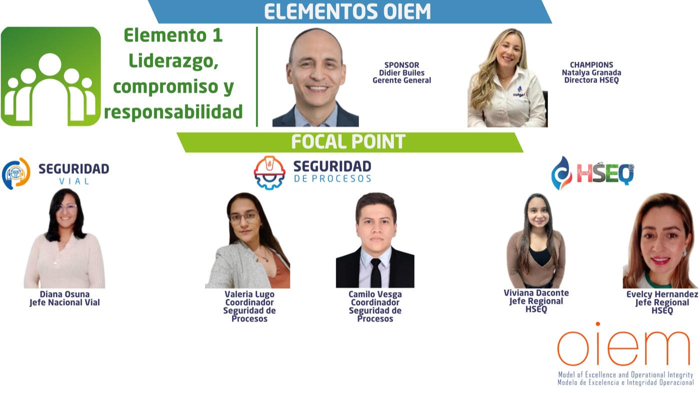
SponsorDidier Builes — Gerente General
ChampionsNatalya Granada — Directora HSEQ
Focal Point — Seguridad VialDiana Osuna — Jefe Nacional Vial
Focal Point — Seguridad de ProcesosValeria Lugo — Coordinador Seguridad de ProcesosCamilo Vesga — Coordinador Seguridad de Procesos
Focal Point — HSEQViviana Daconte — Jefe Regional HSEQEvelcy Hernandez — Jefe Regional HSEQ
Elemento 2 — Evaluación del Riesgo y Gestión del Riesgo
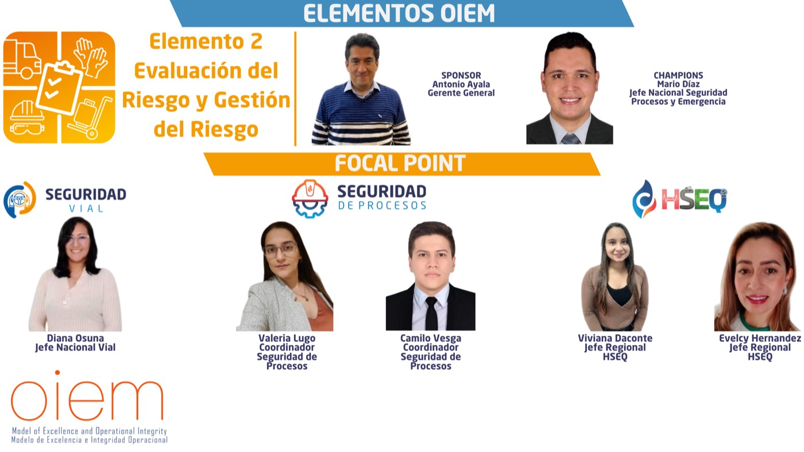
SponsorAntonio Ayala — Gerente General
ChampionsMario Díaz — Jefe Nacional Seguridad de Procesos y Emergencia
Focal Point — Seguridad VialDiana Osuna — Jefe Nacional Vial
Focal Point — Seguridad de ProcesosValeria Lugo — Coordinador Seguridad de ProcesosCamilo Vesga — Coordinador Seguridad de Procesos
Focal Point — HSEQViviana Daconte — Jefe Regional HSEQEvelcy Hernandez — Jefe Regional HSEQ
Elemento 3 — Diseño y Construcción de Instalaciones
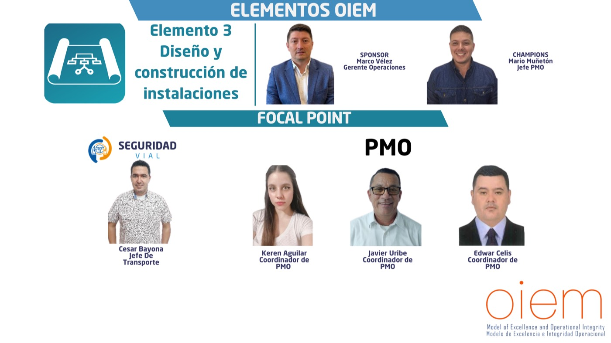
SponsorMarco Vélez — Gerente Operaciones
ChampionsMario Muñetón — Jefe PMO
Focal Point — Seguridad VialCesar Bayona — Jefe de Transporte
Focal Point — PMOKeren Aguilar — Coordinador de PMOJavier Uribe — Coordinador de PMOEdwar Celis — Coordinador de PMO
Elemento 4 — Información / Documentación
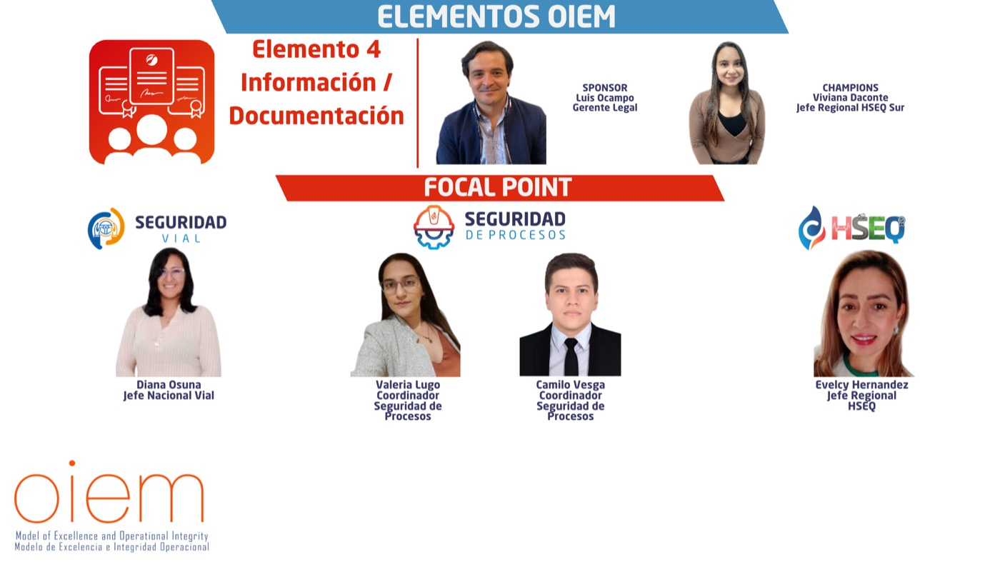
SponsorLuis Ocampo — Gerente Legal
ChampionsViviana Daconte — Jefe Regional HSEQ Sur
Focal Point — Seguridad VialDiana Osuna — Jefe Nacional Vial
Focal Point — Seguridad de ProcesosValeria Lugo — Coordinador Seguridad de ProcesosCamilo Vesga — Coordinador Seguridad de Procesos
Focal Point — HSEQEvelcy Hernandez — Jefe Regional HSEQ
Elemento 5 — Competencia y Capacitación del Personal
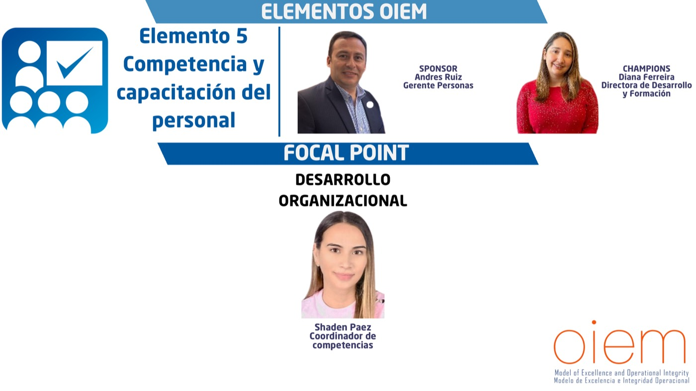
SponsorAndres Ruiz — Gerente Personas
ChampionsDiana Ferreira — Directora de Desarrollo y Formación
Focal Point — Desarrollo OrganizacionalShaden Paez — Coordinador de competencias
Elemento 6 — Operaciones
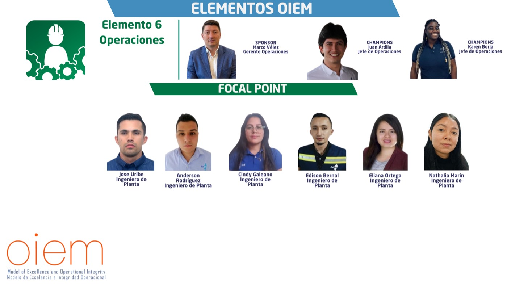
SponsorMarco Vélez — Gerente Operaciones
ChampionsJuan Ardila — Jefe de OperacionesKaren Borja — Jefe de Operaciones
Focal PointJose Uribe — Ingeniero de PlantaAnderson Rodríguez — Ingeniero de PlantaCindy Galeano — Ingeniero de PlantaEdison Bernal — Ingeniero de PlantaEliana Ortega — Ingeniero de PlantaNathalia Marin — Ingeniero de Planta
Elemento 7 — Integridad Mecánica y Confiabilidad
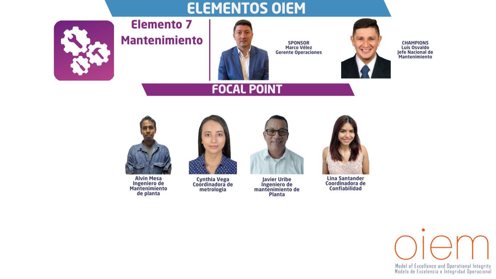
SponsorMarco Vélez — Gerente Operaciones
ChampionsLuis Osvaldo — Jefe Nacional de Mantenimiento
Focal PointAlvin Mesa — Ingeniero de Mantenimiento de PlantaCynthia Vega — Coordinadora de MetrologíaJavier Uribe — Ingeniero de Mantenimiento de PlantaLina Santander — Coordinadora de Confiabilidad
Elemento 8 — Gestión del Cambio
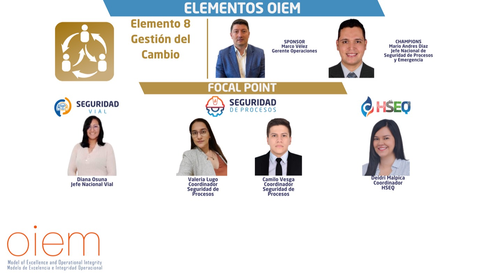
SponsorMarco Vélez — Gerente Operaciones
ChampionsMario Andrés Díaz — Jefe Nacional de Seguridad de Procesos y Emergencia
Focal Point — Seguridad VialDiana Osuna — Jefe Nacional Vial
Focal Point — Seguridad de ProcesosValeria Lugo — Coordinador Seguridad de ProcesosCamilo Vesga — Coordinador Seguridad de Procesos
Focal Point — HSEQDeidri Malpica — Coordinador HSEQ
Elemento 9 — Servicio de Terceros
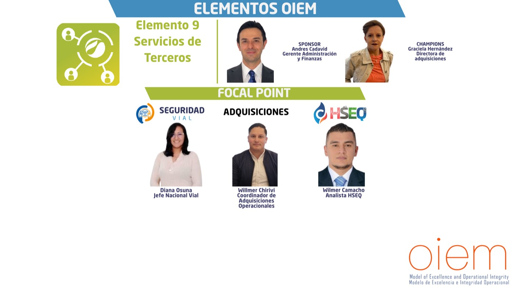
SponsorAndres Cadavid — Gerente Administración y Finanzas
ChampionsGraciela Hernández — Directora de Adquisiciones
Focal Point — Seguridad VialDiana Osuna — Jefe Nacional Vial
Focal Point — AdquisicionesWillmer Chirivi — Coordinador de Adquisiciones Operacionales
Focal Point — HSEQWilmer Camacho — Analista HSEQ
Elemento 10 — Investigación y Análisis de Incidentes y Accidentes
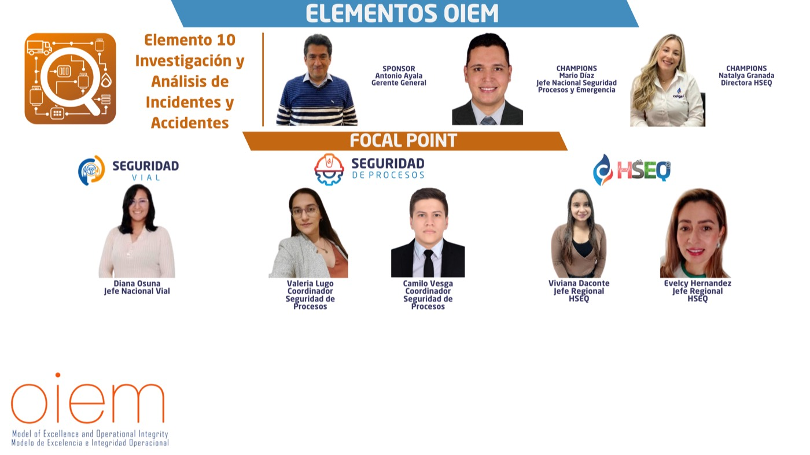
SponsorAntonio Ayala — Gerente General
ChampionsMario Díaz — Jefe Nacional Seguridad de Procesos y EmergenciaNatalya Granada — Directora HSEQ
Focal Point — Seguridad VialDiana Osuna — Jefe Nacional Vial
Focal Point — Seguridad de ProcesosValeria Lugo — Coordinador Seguridad de ProcesosCamilo Vesga — Coordinador Seguridad de Procesos
Focal Point — HSEQViviana Daconte — Jefe Regional HSEQEvelcy Hernandez — Jefe Regional HSEQ
Elemento 11 — Preparación para Emergencias y Relación con la Comunidad
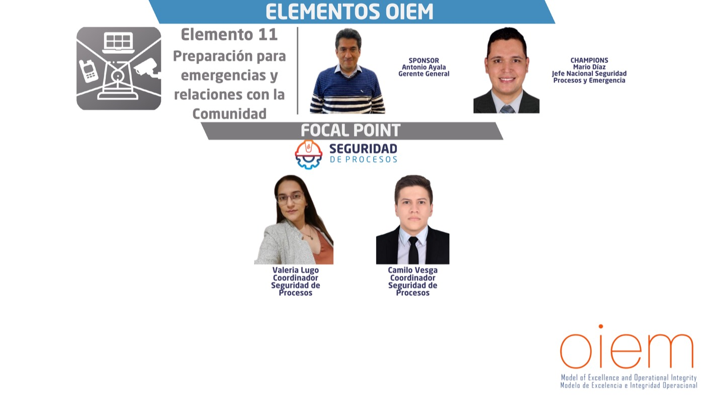
SponsorAntonio Ayala — Gerente General
ChampionsMario Díaz — Jefe Nacional Seguridad de Procesos y Emergencia
Focal Point — Seguridad de ProcesosValeria Lugo — Coordinador Seguridad de ProcesosCamilo Vesga — Coordinador Seguridad de Procesos
Elemento 12 — Evaluación y Mejora de la Integridad de las Operaciones
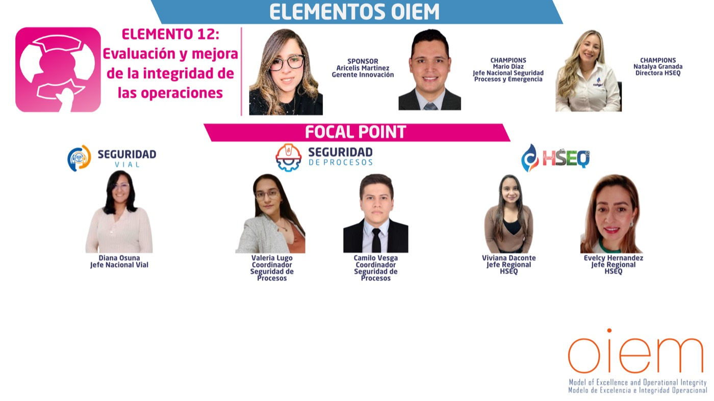
SponsorAricelis Martinez — Gerente Innovación
ChampionsMario Díaz — Jefe Nacional Seguridad de Procesos y EmergenciaNatalya Granada — Directora HSEQ
Focal Point — Seguridad VialDiana Osuna — Jefe Nacional Vial
Focal Point — Seguridad de ProcesosValeria Lugo — Coordinador Seguridad de ProcesosCamilo Vesga — Coordinador Seguridad de Procesos
Focal Point — HSEQViviana Daconte — Jefe Regional HSEQEvelcy Hernandez — Jefe Regional HSEQ